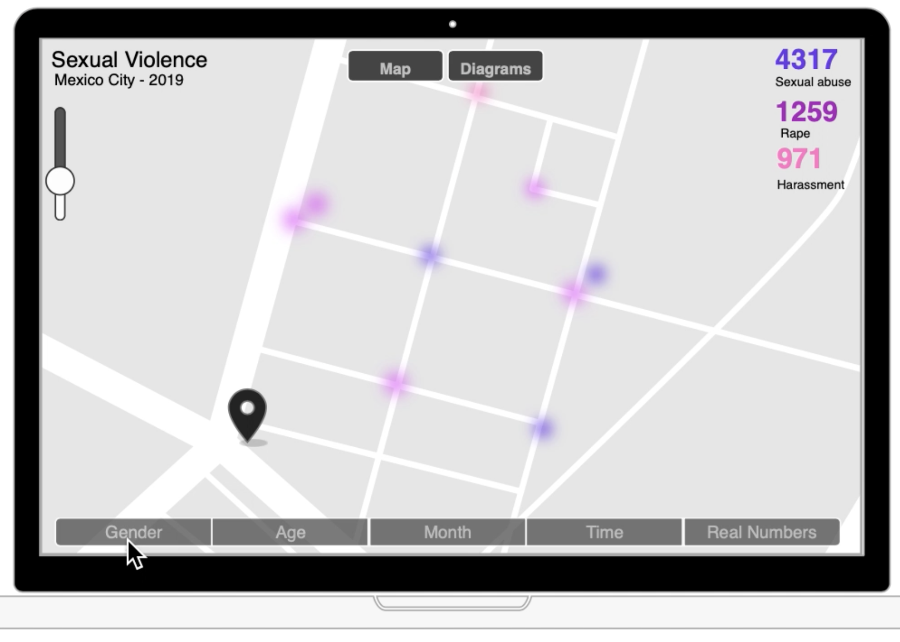
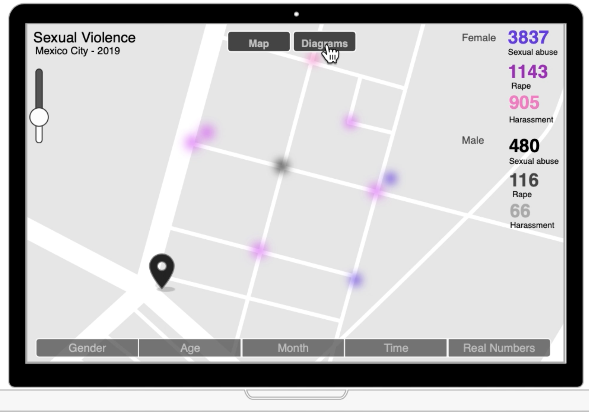
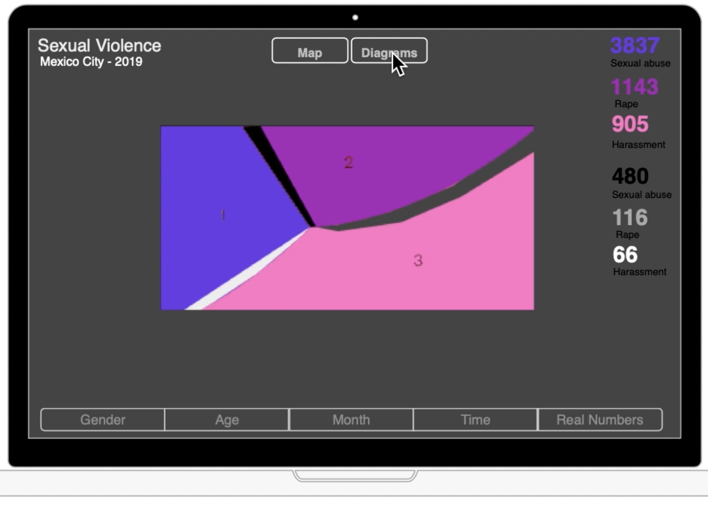

Sexual Violence in Mexico City
Project by: Grace Bryant, Yu Jing Chen and Maria Lucia Morelli
“For millions of women and girls around the world, any possibility of exercising the right to the city is curtailed by their restricted access to public spaces” because in public spaces there is “always the threat and reality of verbal and non-verbal sexual harassment and assault” (Khosla and Dhar, 2013, p. 119).
In 2017, the Thomas Reuters Foundation published a poll portraying Mexico City as the 4th most dangerous city for women regarding sexual violence, which was defined as “rape or sexual attacks and harassment.” In 2019 alone, there were 1006 instances of feminicide.
Street harassment is difficult to quantify especially because women under report these incidents. There is not much incentive to do so. However, it is this data that influences policies and municipal budget allocation.
Our project attempts to visualize reports of sexual harrasment, abuse and rape in Mexico City in 2019 to make this data more accesible to politicians, feminist movements and citizens in general.
The wireframe on the right shows how our landing page would look like. The number of reports on each of the three categories of abuse, harrasment and rape will show in big fonts at the top right corner while acting as a color legend as well.
We aggregate the data by gender, age, month and time.
The gender page shows how this is a problem that women face much more than men.
It will be interesting finding age patterns on this page.
The month page seeks to find if there are months were sexual abuse increments.
The time page seeks to contrast how women experience the city during daylight vs at night.
Additionally, the data can be either visualized with geopoints of the reports on the map or through aggragated diagrams.
The number of reports per category will be displayed again on the top right using the colors as legend. The map can be zoomed in and out.
The diagram pages will have strong but minimalistic visuals using the same color coding. Different designs will use depending on the category that is being displayed.

GENDER
AGE
MONTH
TIME

